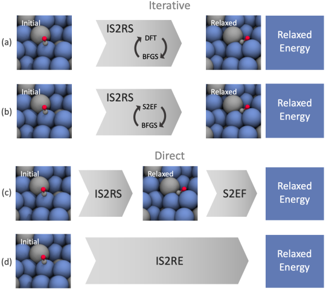

Tasks
Tasks#
In this section, we cover the different types of tasks the OC20 dataset presents and how to train and predict their corresponding models.
Structure to Energy and Forces (S2EF)
Initial Structure to Relaxed Energy (IS2RE)
Initial Structure to Relaxed Structure (IS2RS)
Tasks can be interrelated. The figure below illustrates several approaches to solving the IS2RE task:
(a) the traditional approach uses DFT along with an optimizer, such as BFGS or conjugate gradient, to iteratively update the atom positions until the relaxed structure and energy are found.
(b) using ML models trained to predict the energy and forces of a structure, S2EF can be used as a direct replacement for DFT.
(c) the relaxed structure could potentially be directly regressed from the initial structure and S2EF used to find the energy.
(d) directly compute the relaxed energy from the initial state.
NOTE The following sections are intended to demonstrate the inner workings of our codebase and what goes into running the various tasks. We do not recommend training to completion within a notebook setting. Please see the running on command line section for the preferred way to train/evaluate models.
